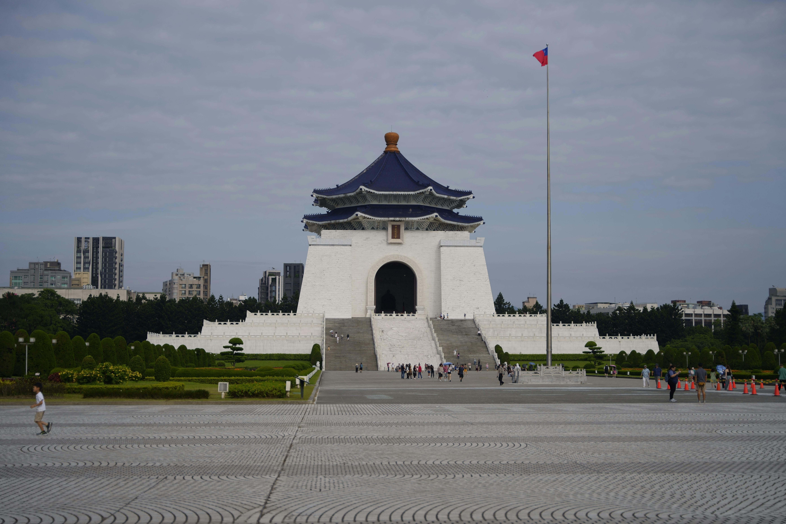
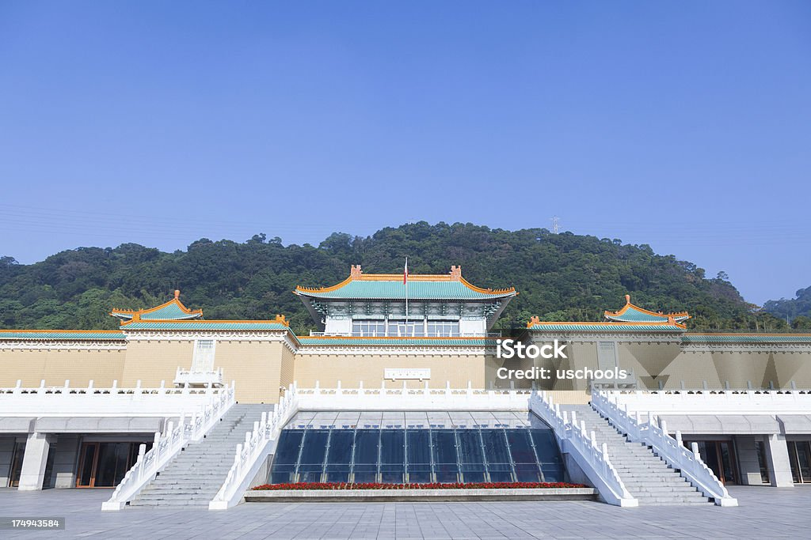

<!DOCTYPE html>
<html lang="en">
<head>
    <meta charset="UTF-8">
    <meta name="viewport" content="width=device-width, initial-scale=1.0">
    <title>Document</title>
</head>
<body>
    
</body>
</html>
<picture>
    <li>台灣
        
        <li>地點:臺北市中正區中山南路21號</li>
        <li>歷史:中正紀念堂現址的土地，為1905年（明治38年）啟用的台灣日治時期台灣軍山砲隊基地，以及1944年（昭和19年）11月啟用的步兵第一連隊基地</li>
        <li>交通:搭高鐵或臺鐵至臺北站下-轉搭臺北捷運至中正紀念堂站下。
            搭臺北市雙層觀光巴士紅線至中正紀念堂站下。（路線圖）</li>
        
        <li>地點:111台灣台北市士林區至善路二段221號</li>
        <li>交通:搭高鐵或臺鐵至臺北站下-轉搭臺北捷運至士林站下-轉搭臺北市公車紅30至故宮博物院站下。
            搭臺北市雙層觀光巴士藍線至故宮博物院站下。</li>
        <li>歷史:是臺灣最具規模的博物館以及臺灣八景之一[15]，也是古代中國藝術史與漢學研究機構</li> 
        
        <li>其他景點</li>
        
        <li>地址： 700台灣台南市中西區南門路2號</li>
        <li>交通:大眾運輸：
            • 搭乘高鐵▸高鐵「臺南站」下車，轉搭「H31」接駁車，於在建興國中/府前路下車
            • 搭乘火車▸臺鐵至「臺南站」下車，轉搭台灣好行「88府城巡迴線」（假日行駛）
            • 搭乘公車▸大臺南「2號」公車至孔廟（臺灣文學館、臺南市美術館1館）站下車</li>
        <li>歷史:臺南孔子廟創建於明永曆19年（1665年），當時稱為「先師聖廟」，至今已有三百多年的歷史，由島上第一個漢人政權鄭氏王朝所創立，為的是在臺開辦教育，培養為國效命的人才</li>    
        

</picture>